קאפיטל 5
די גאנצע אינערליכע טור
זייטן 68–87 אינעם PDF
דער קאבינע-אויסשטעל און וואס דער קאפיטל דעקט
מיר גייען דורך די קאבינע אין דעם סדר ווי איר טרעפט די זאכן: דער דרייווער'ס זיץ, די מיטל-קאנסאל, די פאסאזשיר זייט, די הינטערשטע זיצן, און דער לאסט-פלאץ. אייער EX האט שטאף-זיצן, דעם 9-אינטש טאטש-סקרין, דעם 7-אינטש TFT מיטער (דער מאנואל רופט עס "A-type meter"), און א געווענליכן שיפט-הענטל. די מעסטערס און די קנעפלען אויפן שטייער-ראד ווערן ערקלערט אין קאפיטל 6, און דער טאטש-סקרין אין קאפיטל 7. דער קאפיטל רעדט וועגן דעם וואס איר רירט אן, עפנט, לייגט אוועק און שטעלט איין.
דער טיר פון דרייווער: לאקס און פענצטער
דער לאק-טאב און דער מאסטער לאק-סוויטש
אויפן דרייווער'ס טיר-פאנעל איז דא א קליינער לאק-טאב. שטופט אים פאראויס צו פארשליסן, און ציט אים צוריק צו אויפשליסן. דער טאב פונעם דרייווער ארבעט אנדערש אין יעדע ריכטונג. ווען מען פארשליסט מיט אים, פארשליסן זיך אויך אלע אנדערע טירן, דער טעילגעיט און דאס דעקל פון בענזין. ווען מען שליסט אויף מיט אים, עפנט זיך נאר דער דרייווער'ס טיר און דאס בענזין-דעקל.

דער מאסטער לאק-סוויטש ארבעט אנדערש. דריקט אים אויף איינע פון די פארנטיקע טירן, און ער פארשליסט אדער שליסט אויף אלע טירן, דעם טעילגעיט און דאס בענזין-דעקל צוזאמען.
וואס יעדער קנעפל אינעווייניג פארשליסט אדער שליסט אויף
| קאנטראל | פארשליסן | אויפשליסן |
|---|---|---|
| דרייווער'ס לאק-טאב | אלע טירן, טעילגעיט, בענזין-דעקל | נאר דרייווער'ס טיר און בענזין-דעקל |
| מאסטער לאק-סוויטש | אלע טירן, טעילגעיט, בענזין-דעקל | אלע טירן, טעילגעיט, בענזין-דעקל |
| דרייווער'ס אינעווייניגסטער האנטל | — | אלע טירן (און עפנט דעם דרייווער'ס טיר) |
דער אינעווייניגסטער האנטל פון די פארנטיקע טירן
יעדער פארנטיקער אינעווייניגסטער האנטל שליסט אויף און עפנט זיין טיר מיט איין באוועגונג. ווען איר ציט דעם דרייווער'ס אינעווייניגסטן האנטל, שליסן זיך אויף אויך אלע אנדערע טירן. דאס איז געמאכט כדי מען זאל קענען שנעל ארויסגיין, דעריבער איז עס נאר זיכער אויב די פאסאזשירן פארנט ציען קיינמאל נישט א פארנטיקן אינעווייניגסטן האנטל בשעת דער קאר פארט.
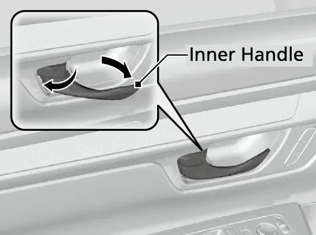
ארויסגיין אן אויפשליסן די אנדערע טירן (איין מאל)
- ווען דער קאר שטייט, שליסט אויף מיטן דרייווער'ס לאק-טאב.
- פארשליסט נאכאמאל מיט דעם זעלבן טאב.
- ציט דעם אינעווייניגסטן האנטל צו עפענען דעם דרייווער'ס טיר. נאר דער דרייווער'ס טיר עפנט זיך; די אנדערע בלייבן פארשלאסן.
דער טריק ארבעט נאר איין מאל. כדי עס זאל בלייבן פאר שטענדיג, שטעלט Auto door unlock (אויטאמאטיש אויפשליסן די טירן(אויף OFF אין Vehicle Settings)די קאר-איינשטעלונגען(אויפן 7-אינטש מיטער)A-type meter). קאפיטל 6 ערקלערט ווי אזוי מען גייט דורך די מיטער מעניוס.
עלעקטרישע פענצטער
די עלעקטרישע פענצטער ארבעטן ווען דער Power מאדָע (דער שטראם-מצב) איז ON. אויפן דרייווער'ס טיר זענען דא סוויטשעס פאר אלע פיר פענצטער. Honda'ס ספעציפיקאציעס שרייבן אז די פענצטער פונעם דרייווער און פונעם פארנטיקן פאסאזשיר גייען אויטאמאטיש ארויף און אראפ.
ווי אזוי די פענצטער-סוויטשעס ארבעטן (אויטאמאטישע פענצטער)
| וואס מען טוט | רעזולטאט |
|---|---|
| לייכט אראפדריקן און האלטן | עפנט זיך נאר ווען מען האלט |
| לייכט ארויפציען און האלטן | מאכט זיך צו נאר ווען מען האלט |
| שטארק אראפדריקן | עפנט זיך אינגאנצן אליין |
| שטארק ארויפציען | מאכט זיך צו אינגאנצן אליין |
| א קורצער דריק אדער צי בשעת עס גייט אליין | שטעלט אפ דעם פענצטער |
ביי א פענצטער אן דער אויטאמאטישער פונקציע, דריקט דעם סוויטש אראפ צו עפענען אדער ציט אים ארויף צו פארמאכן, און לאזט אים אפ ווען דער פענצטער איז אנגעקומען וואו איר ווילט.
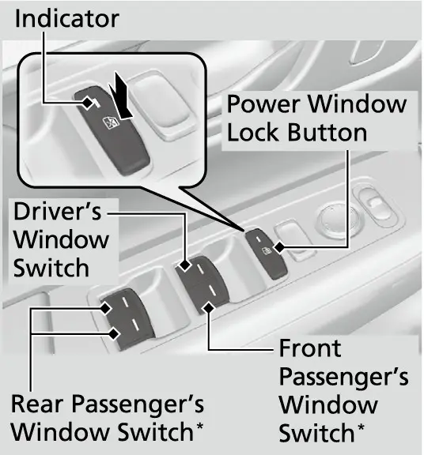
יעדער פענצטער האט auto reverse (אויטאמאטיש צוריקגיין). אויב א פענצטער שפירט א ווידערשטאנד בשעת ער מאכט זיך אליין צו, שטעלט ער זיך אפ און גייט צוריק. Auto reverse הערט אויף צו שפירן ווען דער פענצטער איז כמעט צו, כדי ער זאל זיך קענען גוט פארמאכן. ביים דרייווער'ס פענצטער ארבעט auto reverse נישט אויב איר האלט ווייטער ארויפציען דעם סוויטש. קוקט שטענדיג אז קיין הענט און פינגער זענען נישט אין וועג איידער איר פארמאכט א פענצטער.
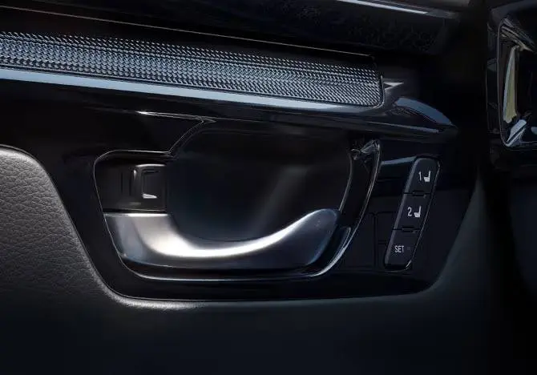
דער power window lock קנעפל (דער פענצטער-שלאס קנעפל) מאכט אויס די סוויטשעס פון די פאסאזשירן, אזוי אז נאר דעם דרייווער'ס פענצטער ארבעט. זיין אינדיקאטאר צינדט זיך אן ווען ער איז אקטיוו. דער מאנואל זאגט אים אנצוצינדן יעדעס מאל ווען א קינד איז אין קאר. כדי די פאסאזשירן זאלן קענען ניצן זייערע אייגענע סוויטשעס, מאכט אויס דעם לאק קנעפל.
די פענצטער ארבעטן ווייטער ביז 10 מינוט נאכדעם וואס איר שטעלט דעם Power מאדָע אויף VEHICLE OFF. ווען מען עפנט איינע פון די פארנטיקע טירן, הערט דאס אויף.
א ווארענונג פונעם מאנואל: פארמאכן אן עלעקטרישן פענצטער אויף עמיצנ'ס הענט אדער פינגער קען פאראורזאכן ערנסטע שאדנס. מאכט זיכער אז די פאסאזשירן זענען ווייט פון די פענצטער איידער איר פארמאכט זיי .
עפענען די פענצטער מיטן רימאוט
אויף א הייסן טאג קענט איר אויסלופטערן דעם קאר פון דרויסן.
עפענען די פענצטער מיטן keyless רימאוט
- דריקט דעם unlock (אויפשליסן) קנעפל אויפן רימאוט.
- אין 10 סעקונדעס, דריקט נאכאמאל דעם unlock קנעפל און האלט אים.
- די פענצטער גייען אראפ. ביי מאדעלן מיט א מונרוף, ווי אייער EX, עפנט זיך דער מונרוף צוזאמען מיט זיי.
- אויב די פענצטער בלייבן שטיין אין מיטן, טוט עס נאכאמאל.
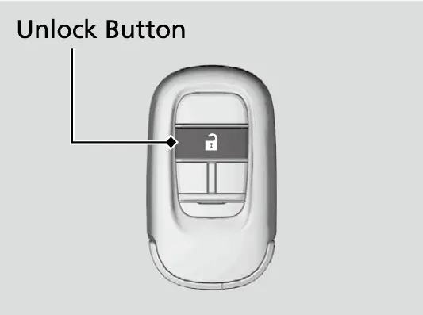
איר קענט טוישן די איינשטעלונג פון עפענען די פענצטער מיטן רימאוט אין Vehicle Settings אויפן מיטער.
איינשטעלן אייער דרייוו-פאזיציע
שטעלט שטענדיג איין דעם זיץ איידער איר פארט. ערשט דעם זיץ, דערנאך די קאפ-שטיצע, דערנאך דאס שטייער-ראד, און צום לעצט דעם שפיגל.
דער דרייווער'ס זיץ
אייער EX האט אן עלעקטרישן דרייווער'ס זיץ מיט 10 ריכטונגען, מיט עלעקטרישע לומבאר-שטיצע (שטיצע פארן אונטערשטן רוקן) אין 2 ריכטונגען. אויפן לומבאר-סוויטש, דריקט דעם פארנטיקן טייל צו פארגרעסערן די גאנצע שטיצע, און דעם הינטערשטן טייל צו פארקלענערן.
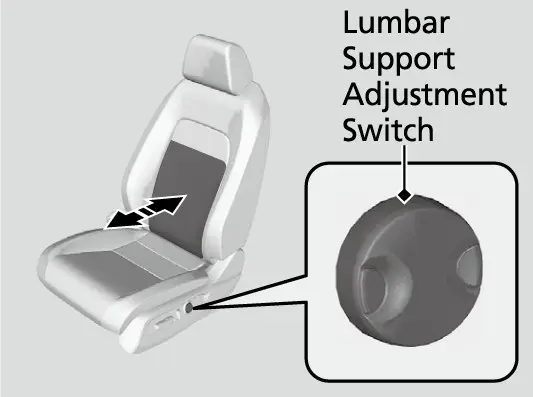
דער כלל פונעם מאנואל איז צו זיצן אזוי ווייט צוריק ווי מעגליך, אבער נאך אלץ קענען אינגאנצן אראפדריקן די פעדאלן אן זיך אנבייגן פאראויס, און באקוועם האלטן דאס ראד. די National Highway Traffci Safety Administration און Transport Canada רעקאמענדירן אמווייניגסטנס 10 אינטשעס (25 cm) צווישן דעם מיטן פונעם שטייער-ראד און אייער ברוסט. האלט די זיץ-לעהנע גראד, מיט גענוג פלאץ צווישן אייער ברוסט און דעם עירבעג-דעקל. ווען מען לייגט זיך צוריק אזוי ווייט אז דער אקסל-גארטל ליגט מער נישט אויף דער ברוסט, שוצט דער גארטל ווייניגער, און עס איז מער מעגליך ארויסצורוטשן אונטער אים ביי א קראך. לייגט נישט קיין קישן אדער אנדערע זאך צווישן דער זיץ-לעהנע און אייער רוקן, ווייל עס קען שטערן דעם סיט בעלט און דעם עירבעג. אויב איר קענט נישט זיצן ווייט גענוג פונעם ראד און נאך אלץ דערגרייכן די קאנטראלן, רעקאמענדירט דער מאנואל צו זוכן ספעציעלע צוגעפאסטע עקוויפמענט. קאפיטל 13 ערקלערט יעדן זיץ-סוויטש.
קאפ-שטיצעס
א קאפ-שטיצע שוצט פון א נאקן-שאדן (whiplash) ביי א קלאפ פון הינטן נאר ווען זי איז ריכטיג איינגעשטעלט. דער מיטן פונעם הינטערשטן טייל פון אייער קאפ זאל ליגן קעגן דעם מיטן פון דער שטיצע, מיט די שפיץ פון אייערע אויערן אויף דער זעלבער הייך ווי איר מיטן. צו הייבן א שטיצע, ציט זי ארויף. צו לאזן אראפ, שטופט זי אראפ בשעת איר דריקט דעם release קנעפל (דער אפלאז-קנעפל). די פארנטיקע קאפ-שטיצעס קען מען נישט ארויסנעמען. הענגט קיינמאל נישט קיין זאך אויף די שטיצעס אדער אויף זייערע פיס, און לייגט נישט קיין זאכן צווישן א פאסאזשיר און דער זיץ-לעהנע.
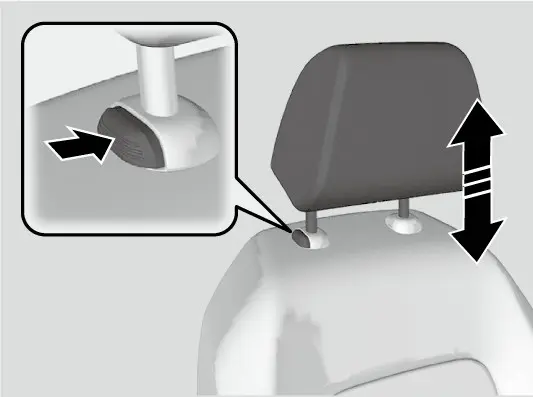
דאס שטייער-ראד
דאס שטייער-ראד שטעלט זיך איין אין דער הייך און אין דער ווייטקייט. שטעלט עס נאר איין ווען דער קאר שטייט, ווייל איינשטעלן בשעת'ן פארן קען מאכן אז איר פארלירט קאנטראל.
איינשטעלן דאס שטייער-ראד
- ווען דער קאר שטייט, שטופט אראפ דעם אדזשאסטמענט-הענטל אונטער דער שטייער-קאלאנע.
- באוועגט דאס ראד ארויף אדער אראפ, און צו אייך אדער אוועק, ביז איר קענט עס באקוועם האלטן און זען די מעסטערס און אינדיקאטארן.
- ציט דאס הענטל ארויף צו פארשליסן דאס ראד.
- פרובירט באוועגן דאס ראד ארויף, אראפ, צו אייך און אוועק, צו באשטעטיגן אז עס איז פארשלאסן.
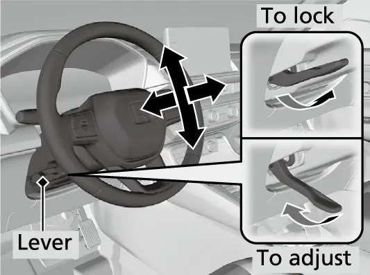
דער מאנואל באשרייבט אויך א געהייצט שטייער-ראד, אבער דער EX האט עס נישט.
דער אינעווייניגסטער שפיגל
שטעלט איין דעם הינטערשטן שפיגל צום לעצט, בשעת איר זיצט אין אייער געווענליכער דרייוו-פאזיציע, און האלט אלע שפיגלען ריין. דער מאנואל ווייזט צוויי סארטן. איינער האט א טאב צו פליפן; זיין נאכט-פאזיציע מינדערט די בלענדונג פון די לייכטן פון הינטן ביינאכט. דער צווייטער איז אן אויטאמאטיש-טונקלדיקער שפיגל מיט אן AUTO קנעפל (אויטאמאטיש) און אינדיקאטאר. ער ווערט אליין טונקלער ביינאכט, און הערט אויף ווען דער גאנג איז אין R. Honda'ס EX ספעציפיקאציע-טאבעלע זאגט נישט וועלכן סארט דער EX האט. אויב אייערער האט א טאב, איז ער דער טאג/ נאכט סארט. אויב ער האט אן AUTO קנעפל, ווערט ער אליין טונקלער.
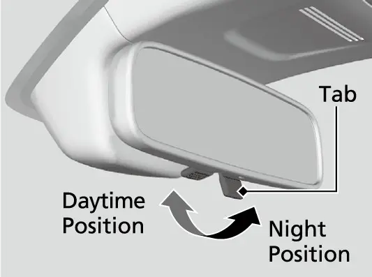
די דעק אויבן און די זון-שירעמס
אינעווייניגע לייכטן
דער פארנטיקער אינעווייניגער ליכט-שאלטער האט דריי פאזיציעס.
דער פארנטיקער אינעווייניגער ליכט-שאלטער
| פאזיציע | וואס זי טוט |
|---|---|
| ON | די לייכטן בלייבן אן סיי ווען די טירן זענען אפן סיי צו |
| Door activated | די לייכטן צינדן זיך אן ווען א טיר עפנט זיך, ווען מען שליסט אויף דעם דרייווער'ס טיר, אדער ביי VEHICLE OFF |
| OFF | די לייכטן בלייבן אויס סיי ווען די טירן זענען אפן סיי צו |
אין door activated (לויט די טירן), גייען די לייכטן פאמעלעך אויס בערך 30 סעקונדעס נאכדעם וואס די טירן מאכן זיך צו. זיי גייען אויך אויס נאך בערך 30 סעקונדעס אויב איר שליסט אויף דעם דרייווער'ס טיר אן עפענען, אדער שטעלט VEHICLE OFF אן עפענען א טיר. זיי גייען גלייך אויס ווען איר פארשליסט דעם דרייווער'ס טיר, פארמאכט דעם דרייווער'ס טיר אין ACCESSORY מאדָע, אדער שטעלט דעם Power מאדָע אויף ON. אויב א טיר בלייבט אפן אין VEHICLE OFF, גייען די לייכטן אויס נאך בערך 15 מינוט. איר קענט טוישן די צייט ביז זיי גייען אויס אין Vehicle Settings אויפן מיטער.
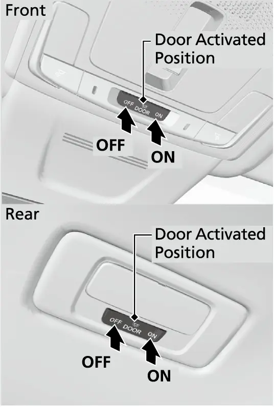
מאפ לייכטן
לעבן דעם אינעווייניגן ליכט-שאלטער זענען די LED מאפ לייכטן, פארנט און הינטן. דריקט יעדן שאלטער צו אנצינדן אדער אויסלעשן זיין ליכט. ווען דער הויפט-שאלטער איז אויף door activated און א טיר איז אפן, וועט דריקן אויפן מאפ ליכט שאלטער נישט אויסלעשן דאס ליכט.
מונרוף
דער עלעקטרישער מונרוף מיט one-touch (איין דריק) און tilt (אנבייגן) איז סטאנדארט אויפן EX. זיין סוויטש איז פארנט אויף דער דעק, און ער ארבעט ווען דער Power מאדָע איז ON.
ווי אזוי דער מונרוף סוויטש ארבעט
| וואס מען טוט | רעזולטאט |
|---|---|
| שטארק צוריקציען | עפנט זיך אינגאנצן |
| שטארק פאראויסשטופן | מאכט זיך צו אינגאנצן |
| א קורצער צי אדער שטופ בשעת ער גייט | שטעלט זיך אפ אין מיטן |
| לייכט צוריקציען און האלטן | עפנט זיך ווען מען האלט |
| לייכט פאראויסשטופן און האלטן | מאכט זיך צו ווען מען האלט |
| דריקן אין מיטן פונעם סוויטש | הייבט זיך אויף שיפע (tilt) |
| שטארק פאראויסשטופן, דערנאך אפלאזן | מאכט זיך צו פון tilt |
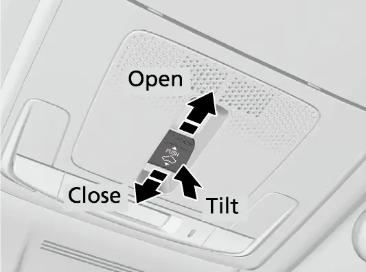
Honda'ס פיטשער גייד דערמאנט אויך א שאטן-דעקל וואס מען שיבט מיט דער האנט, פאר ליכטיגע אדער הייסע טעג. דער מונרוף האט אויך auto reverse (אויטאמאטיש צוריקגיין). אויב ער שפירט א ווידערשטאנד, גייט ער צוריק און שטעלט זיך אפ. דאס שפירן הערט אויף ווען דער מונרוף איז כמעט צו, דעריבער האלט פינגער און זאכן אוועק. דער מונרוף ארבעט ביז 10 מינוט נאך VEHICLE OFF ביז א פארנטיקע טיר עפנט זיך, און ער עפנט זיך צוזאמען מיט די פענצטער ווען איר ניצט דעם רימאוט וועג פון אויבן.
זון-ברילן האלטער, זון-שירעמס און עקסטרעס אין קאבינע
צו עפענען דעם זון-ברילן האלטער אויבן, דריקט און לאזט אפ דעם אריינגעדריקטן פלעק. צו פארמאכן, דריקט אים נאכאמאל ביז ער כאפט זיך איין. ער האלט ברילן און אנדערע קליינע זאכן. האלט אים צו בשעת'ן פארן, אחוץ ווען איר נעמט עפעס ארויס.
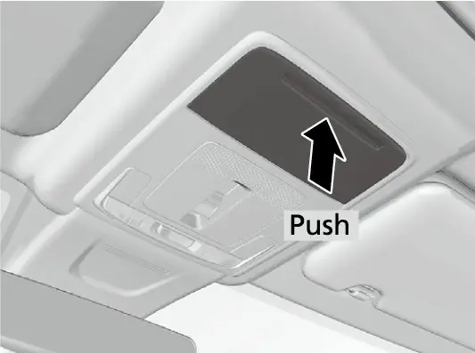
די זון-שירעם ציט זיך אויס אין דער ברייט, וואס העלפט ווען די זון איז נידעריג און פון דער זייט. Honda'ס ספעציפיקאציעס שרייבן אז אויפן EX זענען דא באלויכטענע שפיגעלעך אין ביידע זון-שירעמס, אבער דער מאנואל באשרייבט נישט ווי אזוי זיי ארבעטן. Honda דערמאנט אויך ווייסע LED אמביענט באלויכטונג און Active Noise Cancellation (אקטיווע טומל-פארמינדערונג), וואס מאכט די קאבינע שטילער.
די מיטל-קאנסאל
USB פארטס, טעלעפאן-טאץ און 12-וואלט סאקעט
Honda'ס אפיציעלע 2026 ספעציפיקאציעס שרייבן צוויי 3.0-אמפער USB-C פארטס פארנט. איינער איז דער סמארטפאון/ אודיא דאטא פארט פאר Android Auto אדער Apple CarPlay מיט א קאבל. דער אנדערער איז נאר פאר טשארדזשן. Honda'ס אנליין פיטשער גייד באשרייבט נאך אלץ דעם פארנטיקן דאטא פארט אלס א 2.5-אמפער USB-A פארט. די 2026 ספעציפיקאציע-טאבעלע שרייבט USB-C, דעריבער טשעקט די פארטס אין אייער אייגענעם קאר. אונטער די פארטס באשרייבט די פיטשער גייד א טאץ גרויס גענוג פאר צוויי סמארטפאונס. פארבינדן אייער Pixel 9a ווערט ערקלערט אין קאפיטל 8.
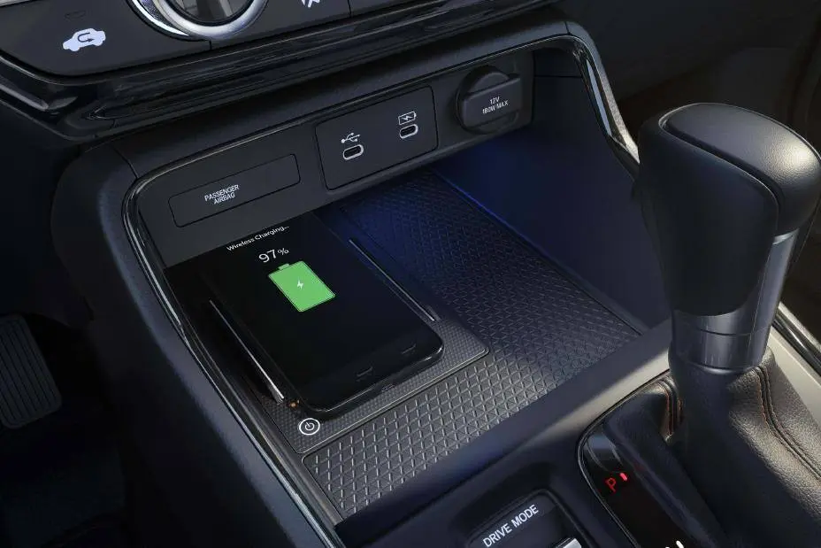
הינטער א דעקל אויפן קאנסאל פאנעל איז דא א 12-וואלט אקסעסארי סאקעט. ער ארבעט אין ACCESSORY אדער ON און גיט שטראם פאר 12-וואלט DC אקסעסאריס פון 180 וואט (15 אמפער) אדער ווייניגער. כדי נישט אויסצוליידיגן די באטעריע, ניצט אים נאר ווען דער מאטאר לויפט. פארמאכט דאס דעקל ווען איר ניצט אים נישט, כדי קליינע זאכן זאלן נישט אריינפאלן.
וויירלעס טשארדזשינג פעד
דער Qi וויירלעס טשארדזשינג פעד (אן קאבל) ליגט אויף דער דרייווער'ס זייט פון דער קאנסאל, לויט Honda'ס פיטשער גייד. ער גיט ביז 15 וואט, אבער די אמת'ע שנעלקייט הענגט אפ אינעם טעלעפאן און אנדערע אומשטענדן.
טשארדזשן א טעלעפאן אן קאבל
- שטעלט דעם Power מאדָע אויף ACCESSORY אדער ON.
- דריקט און האלט דעם power קנעפל אויפן טשארדזשער; דאס גרינע ליכטל צינדט זיך אן.
- לייגט דעם טשארדזשבארן זייט פונעם טעלעפאן גלייך אין מיטן פונעם באצייכנטן ארט אויפן פעד.
- דאס טשארדזשן הייבט זיך אן אליין, דאס געלע (אמבער) ליכטל צינדט זיך אן, און א טשארדזש-סימבאל באווייזט זיך אויפן טאטש-סקרין.
- ווען דאס טשארדזשן איז פארטיג, קומט צוריק דאס גרינע ליכטל. ביי טייל טעלעפאנען בלייבט דאס געלע ליכטל אן.
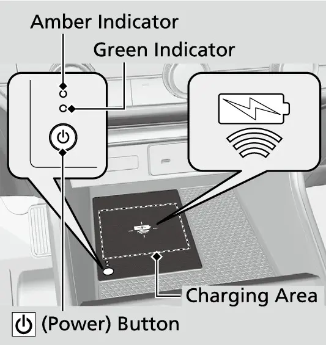
ווען דאס וויירלעס טשארדזשן הייבט זיך נישט אן
| אינדיקאטאר | סיבה | לייזונג |
|---|---|---|
| גרין און געל בלינקן צוזאמען | עפעס ליגט צווישן טעלעפאן און פעד | נעמט אוועק די זאך |
| גרין און געל בלינקן צוזאמען | טעלעפאן נישט אין מיטן | לייגט צוריק דעם טעלעפאן אויפן צייכן |
| גרין און געל בלינקן צוזאמען | פעד צו ווארעם | ווארט, לאזט אפקילן, פרובירט נאכאמאל |
| נאר געל בלינקט | טשארדזשער איז קאליע | פארבינדט זיך מיט א דילער |
דאס טשארדזשן קען אויך אפשטעלן אדער נישט אנהייבן אויב דער טעלעפאן איז שוין פול, אויב ער איז זייער הייס, נאענט צו שטארקע עלעקטראמאגנעטישע מקורות ווי א TV סטאנציע, א פאוער פלענט אדער א גאז סטעישן, אדער אויב דער קעיס פאסט נישט פאר וויירלעס טשארדזשן. דאס טשארדזשן קען זיך אויף א רגע אפשטעלן ווען אלע טירן און דער טעילגעיט מאכן זיך צו, כדי עס זאל נישט שטערן דעם keyless access סיסטעם, אדער ווען דער טעלעפאן רירט זיך. עס איז נארמאל אז דער פעד און דער טעלעפאן ווערן ווארעם. אויב די באטעריע-שוץ פונעם טעלעפאן ווערט אקטיוו, קען דאס טשארדזשן ווערן זייער פאמעלעך אדער אפשטעלן. טשארדזשט נאר איין מכשיר אויף איינמאל. צו אויסלעשן דעם טשארדזשער אויב ער שטערט דעם ראדיא, דריקט און האלט זיין סוויטש א פאר סעקונדעס. דער טשארדזשער נעמט אסאך שטראם, דעריבער ניצט אים נישט לאנג ווען דער מאטאר איז אויס.
טרינק-האלטערס און קאנסאל קאסטן
אין מיטן פון דער קאנסאל זענען דא צוויי טרינק-האלטערס. דער מאנואל ווארנט אז פארגאסענע געטראנקען קענען קאליע מאכן דעם שטאף, דעם טעפעך און עלעקטרישע טיילן, און אז הייסע געטראנקען קענען פארברייען. הינטער די האלטערס איז דער קאנסאל קאסטן, וואס איז אויך די פארנטיקע ארעם-לעהנע. ציט דעם האנטל צו עפענען וואס Honda'ס פיטשער גייד רופט א ריזיגן סטארעדזש קאסטן. דער מאנואל ווייזט אויך א טאץ וואס מען קען ארויסנעמען, וואס ליגט אונטער'ן דעקל פון דער ארעם-לעהנע, אבער עס שטייט אז דאס איז נישט ביי אלע מאדעלן. דאס שיפט-הענטל און די קנעפלען דערנעבן ווערן ערקלערט אין קאפיטלען 6 און 14.
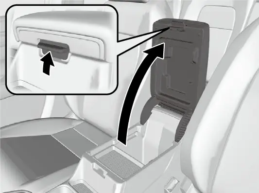
די פאסאזשיר זייט
דער גלאוו באקס
ציט דעם האנטל צו עפענען דעם גלאוו באקס. איר קענט אים פארשליסן מיטן אריינגעבויטן שליסל. אן אפענער גלאוו באקס קען ערנסט שעדיגן דעם פאסאזשיר ביי א קראך, אפילו ווען ער טראגט א סיט בעלט, דעריבער האלט אים שטענדיג צו בשעת'ן פארן. דערפאר איז עס א גוטער פלאץ פאר פאפירן און דעם אונער'ס מאנואל, אבער נישט פאר זאכן וואס איר דארפט דערגרייכן בשעת'ן פארן.
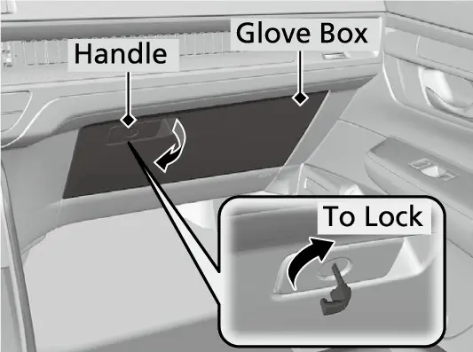
דער פארנטיקער פאסאזשיר זיץ
אויפן EX ווערט דער פאסאזשיר זיץ איינגעשטעלט מיט דער האנט, אריינגערעכנט הייך אדזשאסטמענט מיט דער האנט, לויט Honda'ס ספעציפיקאציעס. שיבט אים אזוי ווייט צוריק פונעם דעשבארד עירבעג ווי עס איז פראקטיש, און האלט די זיץ-לעהנע גראד. דערנאך שאקלט דעם זיץ אהין און צוריק צו באשטעטיגן אז ער איז פארשלאסן. אויפן EX זענען ביידע פארנטיקע זיצן געהייצט, און די הייצונג ארבעט נאר אין ON. א וואג-סענסאר אינעם פאסאזשיר זיץ גיט אינפארמאציע פארן סיט בעלט רימיינדער. פעקלעך אויפן זיץ קענען אפילו אנצינדן די זיץ-הייצונג. די הייץ-שטופן, און ווי אזוי מען שטעלט אפ דאס אויטאמאטישע אנצינדן, ווערן ערקלערט אין קאפיטל 13.
טיר-קעשענעס
יעדע טיר, פארנט און הינטן, האט א זייט-קעשענע מיט אן אריינגעבויטן טרינק-האלטער. די קעשענעס זענען גוט פאר א וואסער-פלעשל אדער א שמאטע צו רייניגן די שויבן. ווען מען האלט געטראנקען דארט אנשטאט אין דער מיטל-קאנסאל, קען גארנישט זיך איבערקערן לעבן דעם טשארדזשינג פעד, וואס דער מאנואל זאגט מוז בלייבן טרוקן.
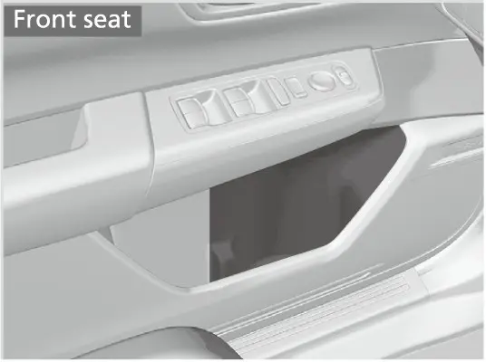
די הינטערשטע זיצן
זיצן, סיט בעלטס און טשארדזשן
די הינטערשטע באנק טיילט זיך 60/40, און Honda'ס פיטשער גייד זאגט אז די זיץ-לעהנעס לייגן זיך צוריק אין אכט פאזיציעס. די ספעציפיקאציעס שרייבן 41 אינטשעס פיס-פלאץ אין דער צווייטער ריי. יעדער זיץ האט א סיט בעלט רימיינדער. נאכדעם וואס א הינטערשטע טיר עפנט זיך, ווייזט דער מיטער וועלכע הינטערשטע גארטלען זענען פארשפילעט. אויב א הינטערשטער גארטל שפילט זיך אויף בשעת'ן פארן, בלינקט דער דיספליי און מען הערט א ווארענונג. Honda שרייבט צוויי 3.0-אמפער USB-C טשארדזש פארטס פאר די הינטערשטע זיצן. דער Rear Seat Reminder (דערמאנונג אויפן הינטערשטן זיץ) און אריינשטעלן קינדער-זיצן ווערן ערקלערט אין קאפיטל 17.

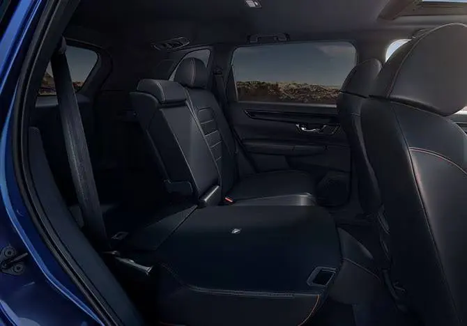
הינטערשטע ארעם-לעהנע, קאפ-שטיצעס און מאנטל-האקן
ציט אראפ די ארעם-לעהנע אין דער מיטלסטער זיץ-לעהנע צו ניצן צוויי טרינק-האלטערס פאר די פאסאזשירן אין די עקן. הינטערשטע קאפ-שטיצעס גייען ארויף און אראפ ווי די פארנטיקע. יעדער פאסאזשיר הינטן זאל איינשטעלן די הייך איידער דער קאר הייבט אן פארן. אנדערש ווי די פארנטיקע, קען מען די הינטערשטע ארויסנעמען צו רייניגן אדער פאררעכטן.
ארויסנעמען און צוריקשטעלן א הינטערשטע קאפ-שטיצע
- ציט די שטיצע ארויף אזוי הויך ווי זי גייט.
- דריקט דעם release קנעפל (דער אפלאז-קנעפל) און הייבט די שטיצע ארויף און ארויס.
- צו צוריקשטעלן, שטעקט אריין די פיס צוריק אין זייערע לעכער.
- שטעלט איין די הייך בשעת איר דריקט דעם release קנעפל.
- ציט ארויף די שטיצע צו באשטעטיגן אז זי איז פארשלאסן. שטעלט שטענדיג צוריק די שטיצעס איידער איר פארט.
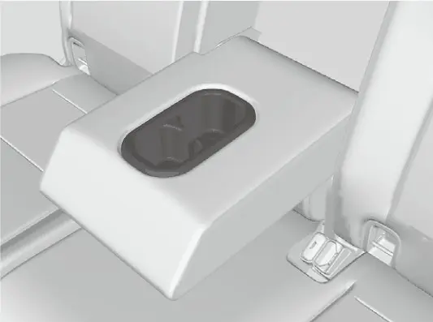
דער מאנטל-האקן אויפן לינקן הינטערשטן האלט-האנטל איז נאר פאר לייכטע זאכן.
קינדער-זיכערע טיר-לאקס
יעדע הינטערשטע טיר האט א קינדער-שלאס הענטל אויף איר ראנד. שיבט עס צו דער לאק פאזיציע און פארמאכט די טיר. דערנאך קען מען די טיר נישט עפענען פון אינעווייניג, ווערט ניט ווי דער לאק-טאב שטייט, דעריבער עפנט זי מיטן אויסערליכן האנטל. אויב א פאסאזשיר דארף ארויסגיין, שטעלט דעם לאק-טאב אויף אפן, לאזט אראפ דעם פענצטער, גרייכט ארויס און ציט דעם אויסערליכן האנטל. ניצט די קינדער-לאקס צוזאמען מיטן power window lock קנעפל. די ספעציפיקאציעס שרייבן אונטערשטע אנקערס אין די צוויי עק-זיצן און tether אנקערס אין אלע דריי הינטערשטע זיצן.
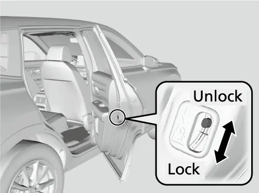
צולייגן די הינטערשטע זיצן
יעדע זייט לייגט זיך צו באזונדער. Honda'ס פיטשער גייד שטעלט די release הענטלעך אויבן אויפן אויסערליכן ראנד פון יעדער זיץ-לעהנע, אזוי אז מען קען צולייגן פון די זייט-טירן. גייט נאך דעם סדר פונעם מאנואל.
אראפלייגן א הינטערשטע זיץ-לעהנע
- נעמט אוועק אלע זאכן פונעם הינטערשטן זיץ-קישן און פון דער פלאר.
- לייגט אוועק דעם מיטלסטן גארטל: שטעקט אריין זיין מעטאל-פלאטע אינעם שפאלט אויף דער זייט פונעם אנקער-שפאנגל.
- לאזט דעם מיטלסטן גארטל זיך איינציען אינעם האלטער אויף דער דעק.
- לאזט אראפ די הינטערשטע קאפ-שטיצע ביזן נידעריגסטן, און לייגט צוריק די ארעם-לעהנע אין דער זיץ-לעהנע.
- ציט דאס release הענטל און לייגט אראפ די זיץ-לעהנע.
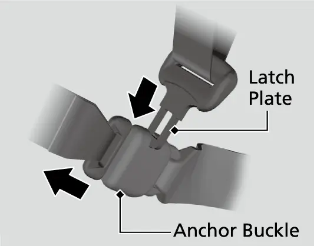
ווען איר הייבט אויף א זיץ-לעהנע, שטופט זי שטארק ביז זי כאפט זיך איין, מיט אלע הינטערשטע אקסל-גארטלען פארנט פון דער זיץ-לעהנע. מאכט זיכער אז די זיץ-לעהנע, קאפ-שטיצעס און קישן זענען גוט איינגעכאפט איידער איר פארט. א צוגעלייגטע זיץ-לעהנע טאר נישט דריקן קעגן דעם פארנטיקן פאסאזשיר זיץ, ווייל דאס קען צומישן די וואג-סענסארן פונעם פאסאזשיר זיץ.
דער לאסט-פלאץ
לייכטן, פלאץ, אנקערס און האקן
ווען איר עפנט דעם מאנועלן טעילגעיט, צינדן זיך אן א פאר LED לאסט-לייכטן. Honda'ס ספעציפיקאציעס שרייבן 39.3 קוביק פיס הינטער דער צווייטער ריי, און 76.5 קוביק פיס מיט די הינטערשטע זיצן צוגעלייגט. אויף דער פלאר זענען דא פיר tie-down אנקערס (צובינד-רינגען) פאר א לאסט-נעץ, לויט Honda'ס פיטשער גייד. די זייט-האקן אינעם לאסט-פלאץ האלטן נאר לייכטע זאכן, ביז 6 lbs (3 kg); שווערערע אדער גרעסערע זאכן קענען זיי קאליע מאכן. לויזע זאכן קענען פליען פאראויס ביי א שטארקן ברעמז, און קיינער זאל נישט גרייכן נאך לאסט בשעת'ן פארן. עצות פאר לאדן זענען אין קאפיטל 22.
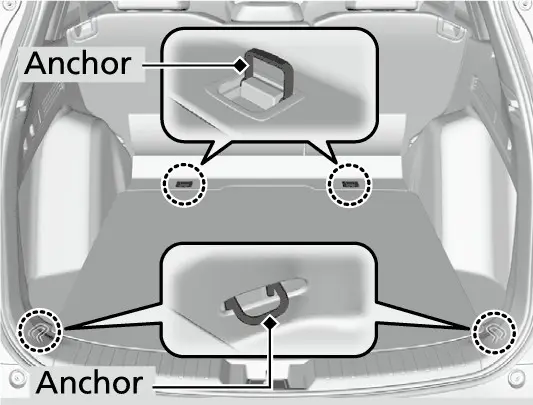
די לאסט-פלאר דעקל אין דער נידעריגער פאזיציע
די לאסט-פלאר דעקל האט א נידעריגע פאזיציע פאר הויכע זאכן.
שטעלן די לאסט-פלאר דעקל אין דער נידעריגער פאזיציע
- ציט דעם שנור צו עפענען די לאסט-פלאר דעקל.
- ציט ווייטער דעם שנור ארויף צו הייבן די דעקל.
- ציט די דעקל צו אייך ביז זי קומט אראפ פון די שטיצע-שטאנגען.
- שטופט דעם ווייטן עק פון דער דעקל אראפ ביזן דנא, ָאונטער די שטיצע-שטאנגען, דערנאך לאזט אראפ דעם נאענטן עק.
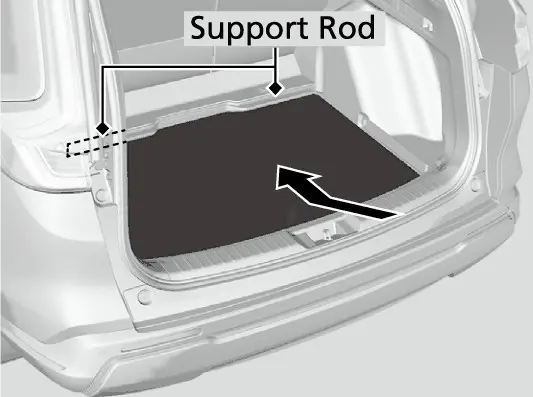
אינעם לאסט-פלאץ איז אויך דא א 12-וואלט סאקעט הינטער א דעקל. ער האט די זעלבע כללים ווי דער פארנטיקער סאקעט: ACCESSORY אדער ON, מאקסימום 180 וואט (15 אמפער), קיין ציגארעט-לייטער, און דער מאטאר זאל לויפן ביי לאנגע באנוץ.
פלאר מעטס
די אנקערס פאר די פלאר מעטס ווערן נישט באשריבן אין די מאנואל זייטן וואס זענען געווען צוגענגליך פאר דעם גייד, דעריבער שטייט דא נישט וואו זיי זענען. וועלכע מעטס איר זאלט נישט ניצן, מאכט זיכער אז זיי ליגן גלאט און זענען ווייט פון די פעדאלן.
אפטע פראגעס
פראגע: פארוואס שליסן זיך אויף אלע טירן ווען איך גיי ארויס?
ענטפער: ציען דעם דרייווער'ס אינעווייניגסטן האנטל שליסט אויף אלע טירן. כדי דאס צו פארמיידן איין מאל, שליסט אויף און פארשליסט נאכאמאל מיטן דרייווער'ס לאק-טאב איידער איר עפנט. כדי עס צו פארמיידן פאר שטענדיג, שטעלט Auto door unlock אויף OFF אין Vehicle Settings.
פראגע: די פענצטער-סוויטשעס פון מיינע פאסאזשירן ארבעטן נישט. וואס איז די פראבלעם?
ענטפער: מסתמא איז דער power window lock קנעפל אן; זיין אינדיקאטאר וועט ברענען. דריקט אים נאכאמאל צו אויסלעשן.
פראגע: די ליכטלעך פונעם וויירלעס טשארדזשער בלינקן גרין און געל צוזאמען. וואס זאל איך טון?
ענטפער: נעמט אוועק אלעס וואס ליגט צווישן דעם טעלעפאן און דעם פעד, לייגט צוריק דעם טעלעפאן אין מיטן אויפן צייכן, אדער לאזט דעם פעד אפקילן. אויב נאר געל בלינקט, איז דער טשארדזשער קאליע און דארף א דילער.
פראגע: קען איך עפענען דעם מונרוף אויף א פראסטיגן אינדערפרי?
ענטפער: ניין. עפענען אים אונטער פרירן אדער ווען ער איז באדעקט מיט שניי אדער אייז קען קאליע מאכן דעם פאנעל אדער דעם מאטאר.
פראגע: וויפיל שטראם קענען די 12-וואלט סאקעטס געבן?
ענטפער: פאר אקסעסאריס פון 180 וואט (15 אמפער) אדער ווייניגער, אין ACCESSORY אדער ON. לאזט לויפן דעם מאטאר ביי לאנגע באנוץ.
פראגע: דארף איך ארויסנעמען די קאפ-שטיצעס צו צולייגן די הינטערשטע זיצן?
ענטפער: ניין, אבער דער מאנואל זאגט פריער אראפצולאזן די הינטערשטע קאפ-שטיצע ביזן סוף, אוועקצולייגן דעם מיטלסטן גארטל, און צוריקצולייגן די ארעם-לעהנע.
די הויפט פונקטן
- שטעלט איין דעם זיץ, די קאפ-שטיצע, דאס שטייער-ראד און דעם שפיגל איידער איר פארט, מיט אמווייניגסטנס 10 אינטשעס צווישן דעם ראד און אייער ברוסט.
- דער דרייווער'ס לאק-טאב פארשליסט אלעס, אבער שליסט אויף נאר דעם דרייווער'ס טיר און דאס בענזין-דעקל; דער מאסטער סוויטש טוט אלע טירן.
- ניצט דעם power window lock קנעפל און די קינדער-לאקס יעדעס מאל ווען קינדער פארן מיט.
- האלט דעם גלאוו באקס און דעם זון-ברילן האלטער צו בשעת'ן פארן.
- עפנט קיינמאל נישט דעם מונרוף ביי פרירן אדער אונטער שניי אדער אייז.
- האלט מעטאל, קארטלעך און פליסיגקייטן אוועק פונעם 15-וואט וויירלעס טשארדזשער.
- די 12-וואלט סאקעטס האלטן ביז 180 וואט; שטעקט קיינמאל נישט אריין א ציגארעט-לייטער.
- די זייט-האקן אינעם לאסט-פלאץ האלטן ביז 6 lbs (3 kg); באפעסטיגט אלע לויזע זאכן.